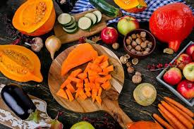

Teme u trendu
Šta se dešava kada trčimo?

Naučnici su dokazali da trčanje snižava nivo lošeg holesterola, masti, triglicerida i šećera u krvi. Takođe, trčanje smanjuje rizik od kardiovaskularnih bolesti.
Šta se dešava u prvih nekoliko sekundi
Mišići počinju da koriste adenozin-trifosfat koji predstavlja glavni izvor energije unutar ćelija. Ćelije mogu normalno da funkcionišu samo kada imaju dovoljno adenozin-trifosfata koji mogu da iskoriste.
Šta se dešava u prvih 90 sekundi
Da bi lučile više adenozin-trifosfata, ćelije počinju da koriste glukozu; eto zašto vežbanje, pa i trčanje, snižava nivo šećera u krvi. Organizam počinje da koristi više glukoze, dok mišići počinju da luče mlečnu kiselinu, koja šalje signale mozgu da se nalazite u stanju fizičkog stresa.
Sledećih 5 minuta
Srce počinje brže da „pumpa“ krv i da je usmerava prema mišićima. Značajno manje krvi se šalje su delove tela koji nisu potrebni tokom trčanja, npr. u organe za varenje. Da bi bolje iskoristili glukozu, mišićima je potreban povećan nivo kiseonika, što izaziva ubrzano i otežano disanje.
U sledećih 8 minuta
Trčanje aktivira najveći mišić u telu, gluteus maximus (zadnjica). Aktivirani su i mišići nogu i abdomena kako bi vam pomogli da imate uspravno držanje i da kontrolišete pokrete. Počinjete da trošite kalorije i masti iz „skladišta“ u organizmu. Trošenje glikogena i povećan unos kiseonika podižu telesnu temperaturu. Da biste se rashladili, organizam šalje krv u kožu, izazivajući njeno crvenilo. Nakon toga počinje znojenje koje efikasno hladi telo.
U sledećih 10 minuta
Ako ste u pristojnoj formi, snabdevanje mišića adenozin-trifosfatom je dovoljno za nastavak trčanja. Organizam troši masti i šećer. Ako vam je fizička kondicija loša, snabdevanje adenozin-trifosfatom nije dovoljno za pravilno funkcionisanje mišića. Mišići ne mogu da dobiju kiseonik dovoljno brzo i mlečna kiselina se povećava. Ako niste u formi, svakog narednog minuta biće vam sve teže da trčite.
Nakon 30 minuta
Sa trčanja pređite na hodanje. Disanje postepeno postaje normalno. Verovatno ćete se osećati odlično - mozak počinje da luči dopamin. Vrlo je verovatno da ćete poželeti da pojedete nešto slatko. Ne brinite jer glikogen „jede“ molekule glukoze, pa se unete kalorije neće pretvoriti u mast već u energiju.
Sezonske namirnice za bolji imunitet
Đumbir
Đumbir podstiče varenje, cirkulaciju krvi i pomaže eliminaciju sluzi – što su sve važni faktori u prevenciji oboljenja disajnih puteva. Možete ga grickati svež ili dodati pola kašilice đumbira u prahu u čaj – dejstvo je isto, samo što će ukus biti mnogo ljući ako grickate svež đumbirov koren.
Ljuta papričica
Pomaže da se razloži sluz, pojača cirkulacija i zagreje organizam, pa je zato prirodno preventivno sredstvo za jačanje odbrambene sposobnosti organizma protiv prehlada.
Jabuke
Nema sumnje da su jabuke najpristupačnije jesenje i zimsko voće. Kora jabuke bogata je kvercetinom, supstancom koja deluje antiupalno i antialergijski (odlično za grlo i sinusa). Osim toga, bogata je biljnim vlaknima i vitaminima. Ako vam po hladnom vremenu sveže jabuke ne prijaju, ispecite ih – neće izgubiti gotovo ništa od svojih korisnih svojstava.
Cimet
Cimet zagreva organizam, pa je zato dobar protiv prehlade. Zato je korisno, kako postaje sve hladnije, redovno dodavati pomalo cimeta u čaj i kafu, ili ga kombinovati sa voćem (npr. posuti njime pečene jabuke).